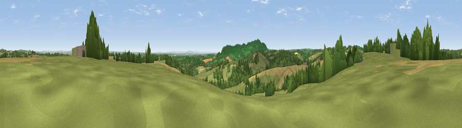

Viewpoint near Heightington
#13895 in England · top 23% of its area beats it · near Heightington · path 166 mWhere it is
The exact computed spot (SO 76625 71075). Click the marker for map links.
Public access: the nearest public right of way is about 166 m away — the final stretch may cross private land. Computed from Natural England's CRoW access layer and OpenStreetMap rights of way — not the legal definitive map. Always verify locally.
The view, rendered

A 360° render of this exact spot computed from the terrain model, tree cover and land cover — summer colours, afternoon light, calibrated against photographs of famous viewpoints. Real trees, hedges and buildings will differ in detail.
The panorama
Grey silhouette: terrain skyline in each direction (720 bearings, Earth curvature and refraction included). Dashed green: skyline with trees (+15 m) and buildings (+8 m) as obstacles. Blue strip: how far the ground is visible on each bearing.
Where the view opens
Wedge length = distance to the farthest visible ground on that bearing (vegetation-aware). Rings at 10, 25 and 50 km.
What fills the view
49% grassland · 25% cropland · 25% woodland ·
Angular shares of the visible panorama (visual magnitude), not map area. Landscape diversity 0.47 (0–1 Shannon).
Key numbers
More beautiful places nearby
The staircase of upgrades: each row has a higher view potential than everything closer. Driving times are estimates from straight-line distance, calibrated against real road routing — check an actual route before setting out.
| Place | Direction | Drive | Score |
|---|---|---|---|
| Stagborough Hill | ENE · 2 km | ~6 min | 63.8 |
| Viewpoint near Abberley | S · 4 km | ~9 min | 77.5 |
| Abberley Hill | SSW · 4 km | ~9 min | 80.4 |
| Woodbury Hill | SSW · 7 km | ~14 min | 81.6 |
| Viewpoint near Great Witley | SSW · 7 km | ~14 min | 83.4 |
| Titterstone Clee | WNW · 19 km | ~32 min | 83.8 |
| North Hill | S · 25 km | ~40 min | 86.8 |
| Worcestershire Beacon | S · 26 km | ~42 min | 87.1 |
52.33725, -2.34449 · source: screening · position refined by local search. Computed location — check access rights before visiting.